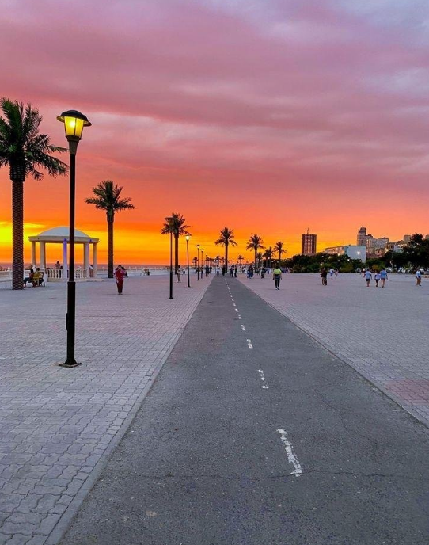

Picturesque Caspian Sea promenade – the hallmark of Aktau city
The Aktau Promenade is one of the most popular spots for walking, relaxing, and meeting by the sea. It blends natural beauty, modern urban design, and a cozy atmosphere that attracts both tourists and locals.
- Length: over 5 km along the coast
- Infrastructure: walking paths, cafes, amphitheater, benches, rest zones
- Activities: cycling, photo shoots, picnics
- View: stunning sunsets over the Caspian Sea 🌅
Things to do
- 🚶 Seaside walks
- 📸 Photos with cliffs and waves
- 🧘 Relaxing evenings at street cafes
- 🨠Street musicians and summer festivals
How to get there?
📠Center of Aktau, along districts 4 and 15
🚗 Easy access on foot, by taxi or bus from any part of the city
The Aktau Promenade is the soul of the city, a place of inspiration, meetings, and family recreation. A must-visit spot! 🌊
PHOTOS
